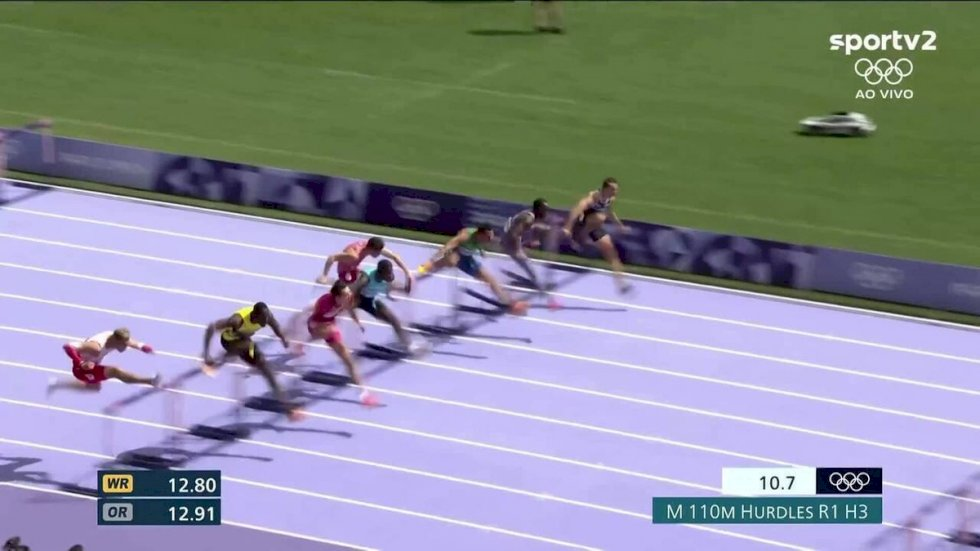

Quatro atletas completaram a primeira fase dos 110m com barreiras
masculino com o mesmo tempo, de 13s43; posições foram decididas nos
milésimos.
A bateria 3 dos 110m com barreira masculino no atletismo,
concluída na manhã deste domingo nas Olimpíadas de Paris 2024, precisou
de um olhar mais apurado dos árbitros. Isso porque a disputa, vencida
pelo chinês Zhuoyi Xu, teve um empate quádruplo. Veja!
